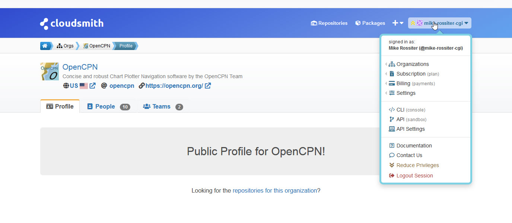
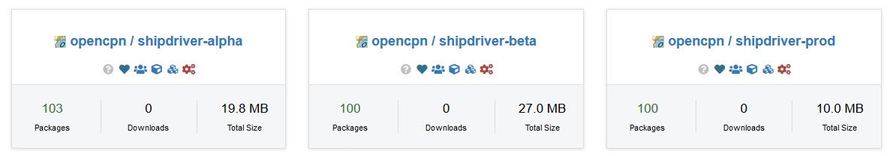
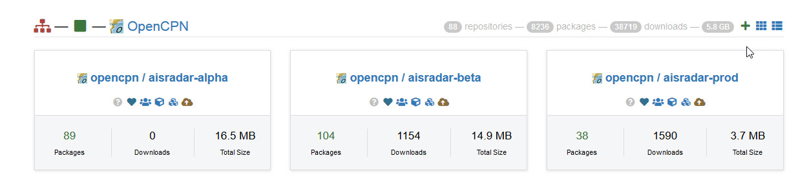
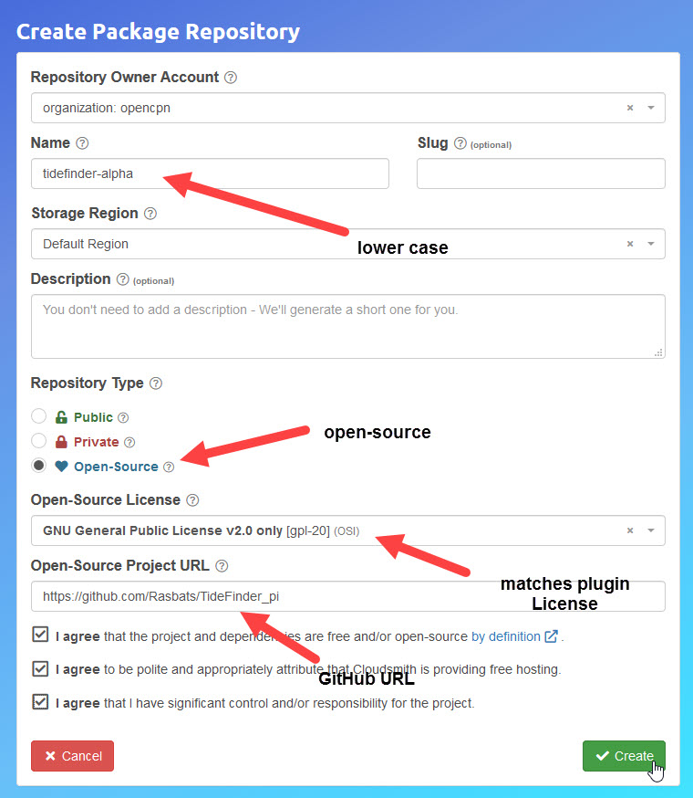
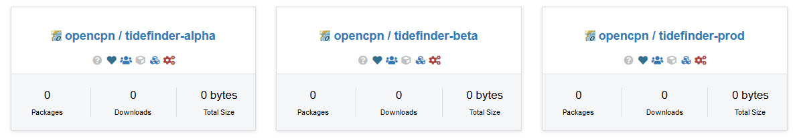
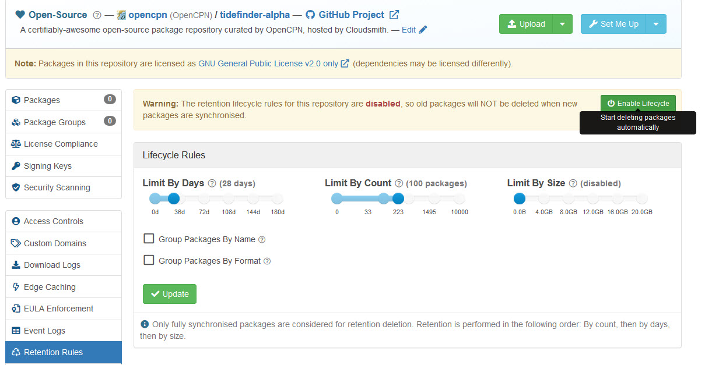
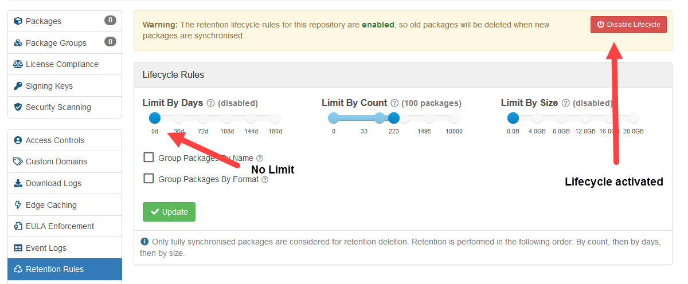
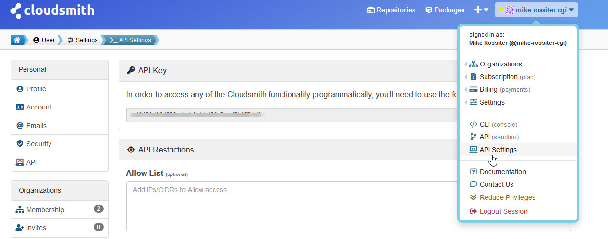

Sign Up
This is easiest using your GitHub account. Signing up is free and you start a ``Free Trial''. You will get an email from Cloudsmith after a few days:
Just a friendly reminder that your trial subscription on Cloudsmith to the
Package (FREE) plan is due to run out 2 days, 23 hours from now.
The paid plan is not necessary. The extra features are not required for creating repositories for your plugin.
Joining the Cloudsmith OpenCPN organisation
This step is optional. A membership is not required to create repositories, but makes it possible to create them in the same area as some other plugins. However, creating the same three repositories without being part of the organization works just fine.
To Join Send an email to Rick Gleason, Jon Gough or Dave Register requesting an invite. This will then be generated by Cloudsmith. FIXME: email addresses needed…
Good news! You’ve been invited by Rick Gleason (@rick-gleason) to be a member of the OpenCPN (@opencpn) organization at Cloudsmith.
What can members do? They can see other members and visible teams, and inherit privileges from the org and team membership..
You’ll need to login to your account to accept or reject the invite: https://cloudsmith.io/user/login/
After you login you will automatically find the invite within the organization invites section of your user settings: https://cloudsmith.io/user/settings/orgs/invites/
Accept/reject the invitation: https://cloudsmith.io/orgs/opencpn/people/invites/fCRGknS1o0IX/
If you accept the invitation then your user account will join the OpenCPN (@opencpn) organization at Cloudsmith. Please note that because this invitation was sent to Mike Rossiter (@mike-rossiter) only that specific account will be able to accept the invitation.
This gives member rights which allows setting up repositories on Cloudsmith for the tarballs and metadata files built by the virtual machines.
Once the invite is accepted you will see the OpenCPN organisation details.

Many repositories have packages already in place.
 To create the repositories for TideFinder click the plus sign at the right of the screen.

Enter the details for the repository starting with the alpha (experimental) repo.

Repeat for the beta and prod (production) repositories.

Three repos have been created.

While we are working with Cloudsmith it is useful to adjust the lifecyle setting for the repositories. Use Admin Access to each repo.

The only setting needed is Retention Rules.

Disable the `Limit By Days' and press the Update button.

Repeat for the beta and prod (production) repositories.
While using Cloudsmith make a note of the API Key. This can be copy/pasted to a file on your PC for use later. 